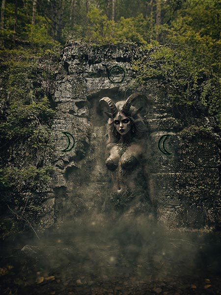
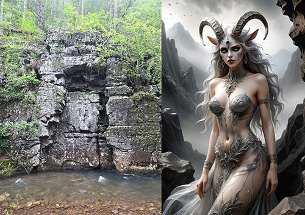

Triple Moon Goddess
Project Overview
This high-concept photo composite explores environmental storytelling through a dark, mythological narrative.
A photographed rock face serves as the foundation for a figure emerging from stone, supported by dramatic lighting and atmospheric effects. Advanced compositing techniques and displacement mapping enhance realism, resulting in a cinematic scene rooted in mystery and scale.

